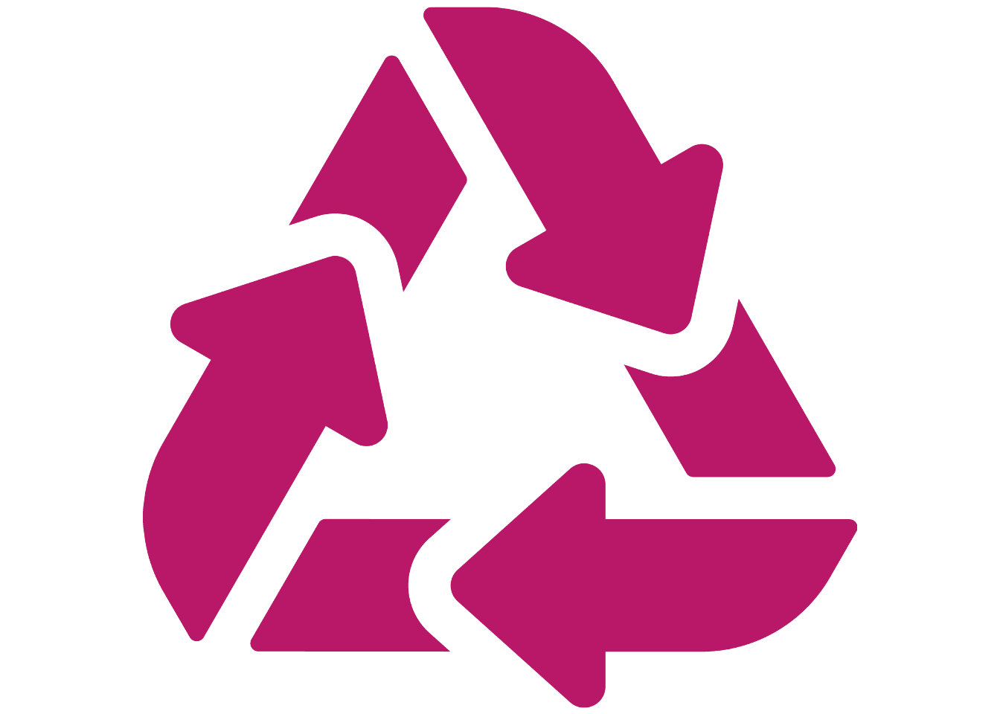
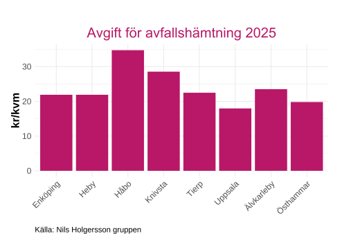
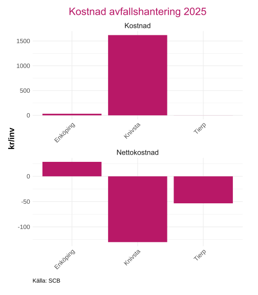

Avfall
Inledning
Denna rapport ger en översikt över avfallshanteringen i kommunerna i Uppsala län. Fokus ligger på mängder avfall som uppstår, hur stor andel som samlas in för materialåtervinning, hur mycket som deponeras samt kostnader kopplade till avfallshämtning och hantering. Syftet är att skapa en tydlig bild av både volymer och effektivitet i kommunernas avfallshantering samt att möjliggöra jämförelser mellan kommunerna.
Alla interaktiva grafer kan laddas ned genom att trycka på  . Då sparas just den bild som visas, med exempelvis den valda regionen. Genom att dubbelklicka på kommunnamn i grafens legend så zoomas den kommunen in för en mer detaljerad vy(flera kan väljas samtidigt).
. Då sparas just den bild som visas, med exempelvis den valda regionen. Genom att dubbelklicka på kommunnamn i grafens legend så zoomas den kommunen in för en mer detaljerad vy(flera kan väljas samtidigt).
Avfallsmängder och materialåtervinning
Detta avsnitt beskriver hur mycket avfall som uppstår i kommunerna i länet, hur stor andel som materialåtervinns och hur mycket avfallet som går till deponi. Syftet är att ge en samlad bild av både avfallsmängder och hur effektivt avfallet tas om hand.
Materialåtervinning (%) visar andel av hushållsavfall som samlats in för materialåtervinning (inklusive biologisk behandling) av totalt insamlat hushållsavfall, multiplicerat med 100 för procent. Ingår även rejekt (insamlat men ej återvinningsbart). Hushållsavfall inkluderar mat- och restavfall, grovavfall, farligt avfall och producentansvar (förpackningar, tidningar, elavfall, batterier etc.).
Grovavfall till deponi (kg/invånare) visar mängden grov- och farligt avfall som deponerats.
Kommunalt avfall per invånare (kg/invånare). Justeringen tar hänsyn till fritidshus, gästnätter och pendling, för att ge en mer korrekt jämförelse mellan kommuner. Kommunalt avfall inkluderar mat- och restavfall, grovavfall, farligt avfall och jämförligt avfall från verksamheter samt producentansvar.
Data är hämtat från Rådet för främjande av kommunala analyser (2025) som hänvisar vidare till Avfall Sverige (2025).
Älvkarleby är den kommunen i länet som har högst andel kommunalt avfall som samlats in för återvinning över en stor del av perioden. Håbo och Knivsta visar en svag uppgående trend över tid som har varierat över åren, Enköping och Uppsala visar en högre andel mellan 2013 och 2016 än vad de har 2024. Det saknas data för flera av åren för Tierp och Östhammar, vilket gör det svårare att analysera trenderna, men Östhammar har lägst andel av kommunerna för samtliga år data finns tillgängligt.
Angående avfall till deponi så har Tierp mycket högre kg/invånare än resterande kommuner och klickar man bort Tierp och Östhammar från grafen så syns det att Enköping, Heby, Håbo, Uppsala och Älvkarleby har en minskande trend, medan Knivsta har en ökande. Enköping och Heby har exakt samma värde under perioden.
Det totalt insamlade avfall per invånare visar en minskade trend för alla kommuner i länet utom Tierp och Östhammar. Håbo, Tierp och Enköping är de tre kommunerna med högst totalt insamlade avfall per invånare år 2024 medan Uppsala, Knivsta och Älvkarleby är de kommunerna med lägst nivåer 2024.
Avfall per kategori
I detta delkapitel visas hur det kommunala avfallet fördelar sig mellan olika avfallskategorier, till exempel mat- och restavfall, förpackningar, farligt avfall och grovavfall. Fördelningen ger en mer detaljerad bild av vilken typ av avfall som dominerar i respektive kommun.
Avfallshanteringen i kommunerna delas in i fyra huvudkategorier.
Mat- och restavfall omfattar hushållsavfall, inklusive brännbart avfall och matavfall, samt jämförligt avfall från exempelvis affärer, kontor, industrier och restauranger.
Förpackningar och returpapper består av insamlade förpackningar av papper, plast, glas och metall samt returpapper som omfattas av producentansvar.
Farligt avfall inkluderar småkemikalier, färg, oljehaltigt avfall, impregnerat trä, asbest samt batterier och elavfall som exempelvis vitvaror, elektronik och lampor.
Slutligen omfattar grovavfall till exempel trädgårdsavfall, utsorterat trä, övrigt brännbart, wellpapp, metallskrot, gips, planglas, kommunplast, deponirest samt övrigt grovavfall, från både hushåll och verksamhet. Däremot ska till exempel inte byggavfall från snickeriföretaget, men många kommuner har problem att skilja på detta vilket gör att det kan ingå i data.
Data är hämtat från Rådet för främjande av kommunala analyser (2025) som hänvisar vidare till Avfall Sverige (2025) via FTI och de nämner att i förekommande fall kompletterande uppgifter från kommunen avseende fastighetsnära insamling.
Enligt Rådet för främjande av kommunala analyser (2025) har invånarantalet justerats för att ta hänsyn till fritidshus, gästnätter samt in- och utpendling. Detta gör att avfallsmängder i kommuner med mycket turism eller fritidshus speglas på ett mer korrekt sätt och blir jämförbara med andra kommuner.
Grovavfall dominerar i de flesta kommuner, medan mat- och restavfall är störst i Uppsala, Älvkarleby och Östhammar. Trenden över de senaste fem åren visar generellt minskningar, men Håbo och Knivsta har små ökningar för till exempel förpackningar och returer. Detta kan dock ses som positivt, eftersom mer material samlas in för återvinning istället för att gå till deponi eller förbränning om det hade varit restavfall.
Avgift för avfallshämtning
Figur 4 visar kostnaden för avfallshämtning i kronor per kvadratmeter inklusive moms under ett år för en typfastighet i kommunen. Typfastigheten utgörs av ett flerbostadshus med en boendeyta på 1 000 kvadratmeter.
Inför år 2024 har en ny avfallsdefinition införts, och insamlingen sker via Avfall Sveriges statistik- och insamlingsverktyg Avfall Web. Den nya definitionen anger att avfallsmängden motsvarar hämtning en gång per vecka av ett 660-liters restavfallskärl och ett 140-liters matavfallskärl, med en antagen dragväg på 9 meter.
Data är hämtat från Rådet för främjande av kommunala analyser (2025) som refererar till Nils Holgersson-gruppen (2025).

Ladda ner
{kind=link}
{kind=link}
De högsta avgifterna för avfallshämtning i länet finns i Håbo och Knivsta på över 25 kronor/kvadratmeter, de lägsta priserna finns i Uppsala och Östhammar på runt 18 respektive 20 kr/kvm.
Kostnad avfallshantering
Figur 5 visar nettokostnaden för avfallshantering per invånare i kommunen den 31 december. Den beräknas som bruttokostnad minus interna intäkter och försäljning till andra kommuner och regioner, dividerat med antalet invånare. Med nettokostnad avses bruttokostnad minus bruttointäkter.
Nettokostnaden omfattar produktion och distribution av avfallshantering och avser endast avfallshantering som bedrivs i förvaltningsform.
Data är hämtat från Rådet för främjande av kommunala analyser (2025) som refererar till Statistiska centralbyrån (SCB) (2025).

Ladda ner
{kind=link}
{kind=link}
Den högsta bruttokostnaden för avfallshantering är i Östhammar följt av Håbo och Knivsta, det är stora skillnader mellan kommunerna, men eftersom data endast är för avfallshantering i förvaltningsform gör det att en del data kan saknas, Uppsala kommun har värdet 0 i grafen.
Nettokostnaden i Tierp är negativ på runt -550kr/invånare, vilket då visar att intäkterna är större än kostnaderna, till skillnad mot Älvkarleby och Östhammar som har nettokostnader på 105 respektive 61 kr/invånare
Källor
Avfall Sverige. 2025. ”Avfall Sverige – kommunernas branschorganisation inom avfallshantering”. https://www.avfallsverige.se/.
Nils Holgersson-gruppen. 2025. ”Nils Holgersson-rapporten”. https://nilsholgersson.nu/.
Rådet för främjande av kommunala analyser. 2025. ”Kolada – Jämför och analysera nyckeltal i kommuner och regioner”. https://www.kolada.se/.
Statistiska centralbyrån (SCB). 2025. ”Statistikdatabasen”. https://www.statistikdatabasen.scb.se/pxweb/sv/ssd/.